Quick Idea: The App Tests Non-Connected Areas Together
The picture below shows a simple apartment. The app draws connections between areas, then colors the areas into Group A and Group B. Connected areas are placed in different groups so they are tested in different rounds.

Before You Start
- Make sure the phone is charged.
- Make sure the connected sniffer is attached if the app requires it.
- Open the study app.
- Choose the method assigned for this session: AR + Button, QR Code, or NFC Tag.
- Complete any area setup shown by the app.
- Include hallways, entryways, connected spaces, and other areas you may pass through.
- Do not enter areas before the app asks you to.
Connection Setup
- After naming areas, the app asks which areas are connected.
- Mark areas that share doors, open boundaries, or hallways.
- Mark areas that are visible from each other.
- Mark areas that must be passed through to reach another area.
- Confirm the connection graph shown by the app.
Important
Passing through an area can trigger devices there. Follow the route prompt and do not treat transit as a separate area action unless the app asks.
Grouped Detection Rounds
- The app may group areas automatically.
- You will test one group at a time.
- Only enter the area the app names.
- Do not enter other areas unless the app route requires it.
- If you must pass through another area, follow the app prompt and do not treat that as a separate area action unless the app asks.
- Areas near your route may be guard/transit areas. They are not judged as clean non-target areas in that round.
Start Detection
- After area and connection setup, tap Start Detection.
- This starts the guided session.
- This also starts network capture through the connected sniffer.
- You do not need to start the sniffer separately.
- From this point, follow only the app prompts.
AR + Button Method
- Confirm the area list or map shown by the app.
- Stand outside the target area shown on the screen.
- Wait for the app prompt.
- Tap Start Action.
- Enter the target area normally.
- Walk naturally along the instructed path.
- Exit the target area.
- Tap Action Finished after you are outside.
- Wait outside until the app gives the next prompt.
What the app records
The app records the time between Start Action and Action Finished as the action period for that target area.
QR Code Method
Setup
- Enter the number of areas.
- Place or select one QR code near each area entrance.
- Scan the QR code.
- Name the area, such as Bedroom, Kitchen, Hallway, Entryway, Living Room, Office, or Bathroom.
- Confirm the area-to-code mapping.
- Repeat for every area.
- Review the area table before connection setup.
Detection
- When the app names an area, stand outside that target area.
- Scan that area's QR code before entering.
- Enter the target area normally.
- Walk naturally along the instructed path.
- Exit the target area.
- Scan the same QR code again after exiting.
- Wait for the next prompt.
Action signal
The app marks that area's action signal as 1 between the two scans. Transit is logged separately or handled as a transit signal when the app prompts it.
NFC Tag Method
Setup
- Enter the number of areas.
- Place or select one NFC tag near each area entrance.
- Tap the NFC tag with the phone.
- Name the area.
- Confirm the area-to-tag mapping.
- Repeat for every area.
- Review the area table before connection setup.
Detection
- When the app names an area, stand outside that target area.
- Tap that area's NFC tag before entering.
- Enter the target area normally.
- Walk naturally along the instructed path.
- Exit the target area.
- Tap the same NFC tag again after exiting.
- Wait for the next prompt.
Action signal
The app marks that area's action signal as 1 between the two taps. Transit is logged separately or handled as a transit signal when the app prompts it.
During Waiting Periods
- Stay outside the target area unless the app asks you to enter.
- Do not perform extra area actions during idle periods.
- Keep the phone with you.
- Wait until the app gives the next instruction.
If Something Goes Wrong
Tap Report Mistake if:
- You enter the wrong area.
- You scan or tap the wrong tag.
- You forget to scan or tap before entering.
- You forget to scan or tap after exiting.
- The QR scan fails.
- The NFC tap fails.
- The app loses AR tracking.
- You move before the prompt.
- You use a different route than the app asked for.
- You are not sure what happened.
After you tap Report Mistake, the app will restart the affected step.
Privacy and Safety
- The app records action timing and Wi-Fi metadata.
- The protocol does not require audio or video recording unless separately stated.
- Device identifiers should be pseudonymized before analysis.
- Do not use the protocol in an unsafe situation.
- You may stop at any time.